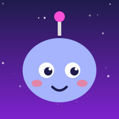

Idea first
We listen, then shape the concept together.
About
NOVAFORGE is a game and interactive studio built by Nurjamal — a developer who loves turning ideas into things you can click, play and explore. It started with small browser projects: an interactive web experience, a chatbot and a Battleship game, all open on GitHub.


To make digital worlds that feel alive: playful, polished and easy to enter. Every project should look beautiful, run smoothly and leave a smile.

Developer and creative behind NOVAFORGE. Passionate about games, clean interfaces and details that make a project feel premium. Likes to build the whole thing — idea, design, code and polish — and to keep clients in the loop at every step.
We listen, then shape the concept together.
Smooth motion, clear UI, thoughtful color.
Clear steps, no surprises.
You talk directly to the maker.
Fun visuals backed by clean code.
Our projects are public — see them yourself.